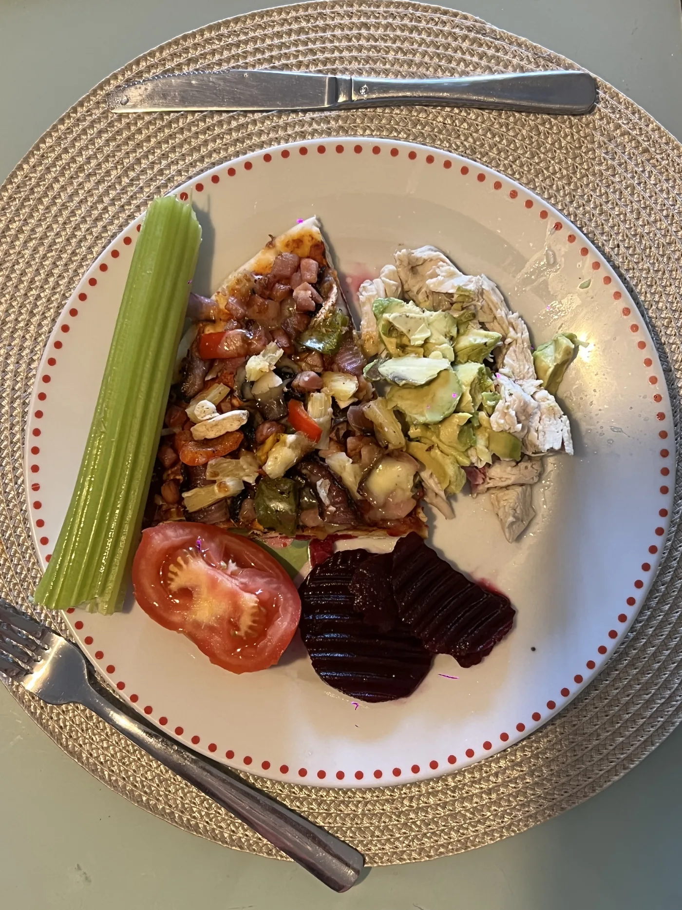
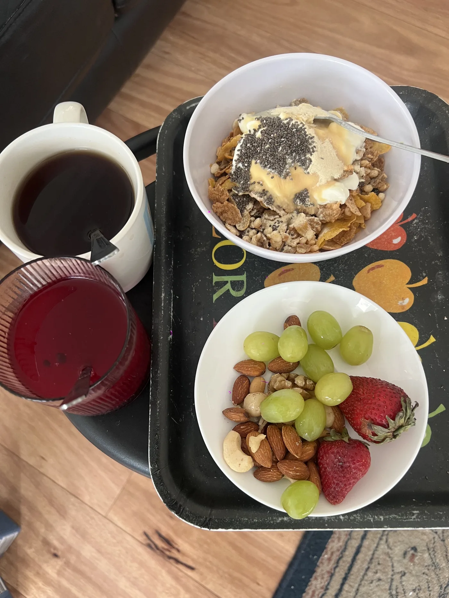
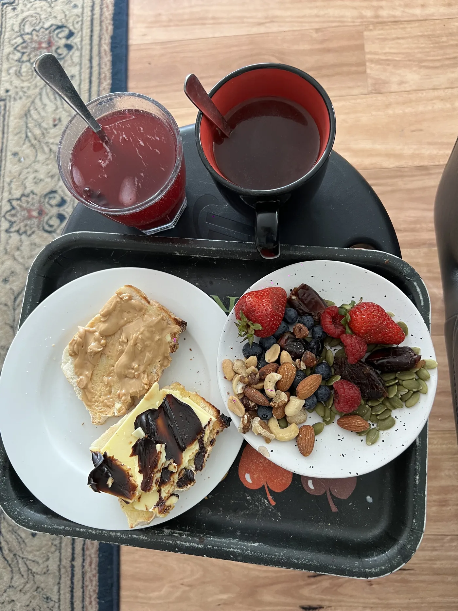
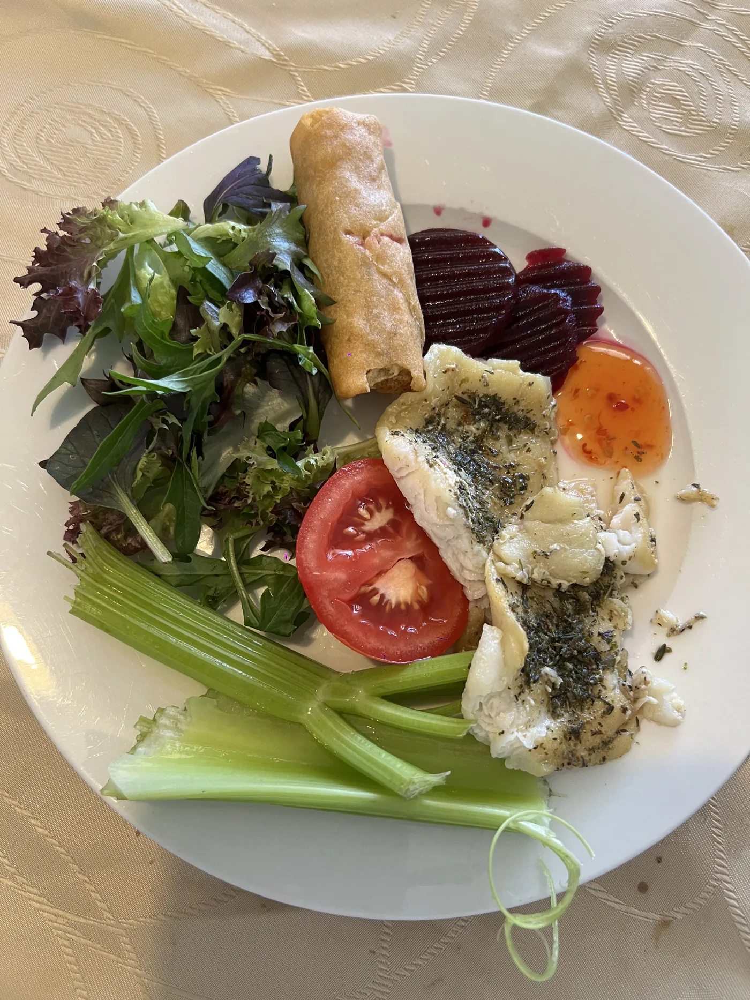
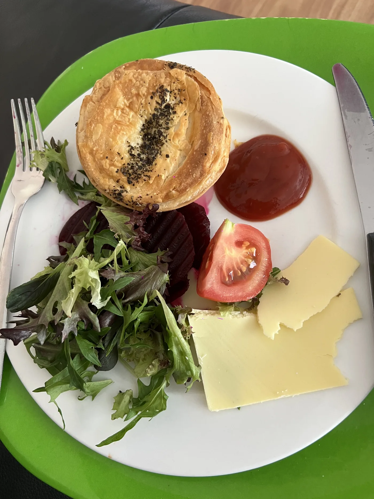
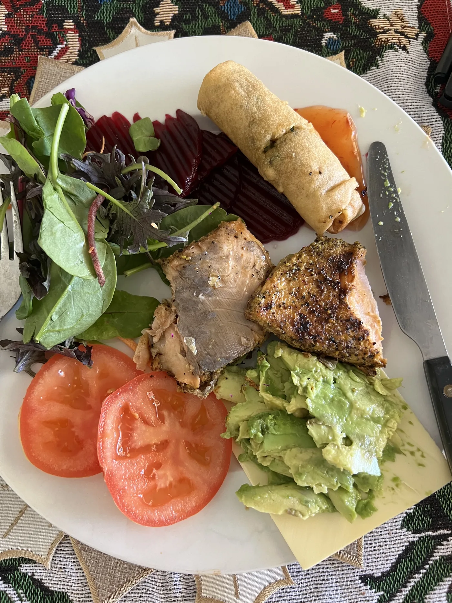

Eat Well
Simple, nourishing meals that support energy and consistency — without diet obsession.
Explore Eat Well →What eating well actually means → 10 simple healthy meals I actually eat →
LifeBuiltWell is a simple, sustainable approach to wellbeing: nourishing food, functional movement, and faith as the cornerstone.
This site shares what has helped me. If you have injuries or ongoing pain, please seek personalised advice from a qualified professional.
I work in a Christian school, stay active with tennis and functional training, and I share what genuinely helps me feel steady and strong.
A practical routine built around movement, sunlight, nutrition, faith, and simple daily rhythms.
This is one of the most personal pages on LifeBuiltWell. It walks through the simple routine I actually follow: oral care, movement, a short walk, a nutritious breakfast, time in God’s word, staying off tech early, and the sleep habits that help set the next day up well.
Read my morning routineNo hacks. No extremes. Just a steady approach that works over time.
Simple, nourishing meals that support energy and consistency — without diet obsession.
Explore Eat Well →Functional movement for long-term body function: strength, balance, mobility, and fitness you can use.
Explore Move Well →Faith as the cornerstone — rhythms, purpose, rest, and a steady mind and spirit.
Explore Live Grounded →Apps and devotional resources I use for a calm, Scripture-focused start to the day.
Simple meals you can repeat — nothing extreme.






Simple meals I actually eat — nothing extreme, just real food that helps me feel steady and strong.
I’m not interested in extremes. I care about steady habits that help you show up well — in body, mind, and spirit.
A simple reset. Nothing fancy. Just foundations.
Build one meal per day with:
Choose a simple combo:
Take 2–10 minutes for:
Tools that make consistency simple (and measurable).
Did you eat well, move well, and live grounded today? Track progress without guilt.
A weekly routine builder focused on balance, strength, mobility, and recovery.
Build a balanced plate with simple choices. No obsession. Just foundations.